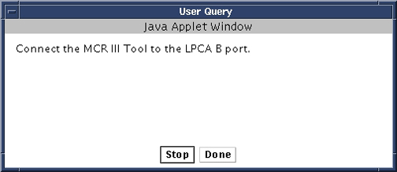
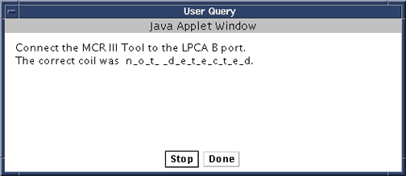

Illustration 6: Connect B Port

A similar query will appear in 32-channel systems once the B port has been tested. At this point disconnect the MCR tool from the B port and connect it to the C port as instructed and click [Done]. If the tool is not detected after clicking [Done], then a User Query will appear indicated that it was not detected (see Illustration 7).
Illustration 7: Tool Not Detected
